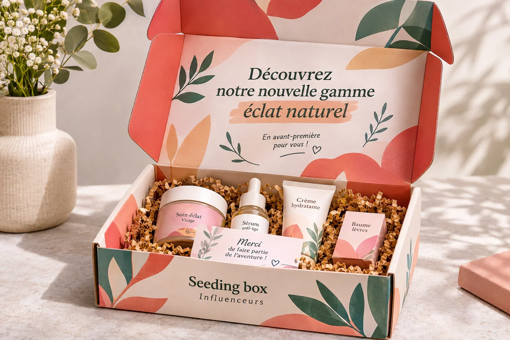
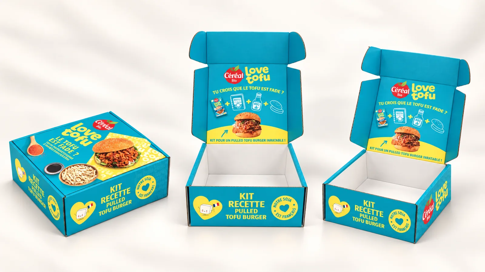
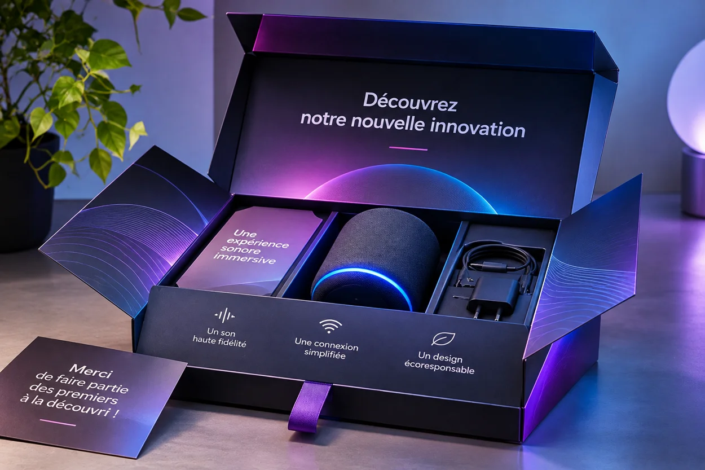
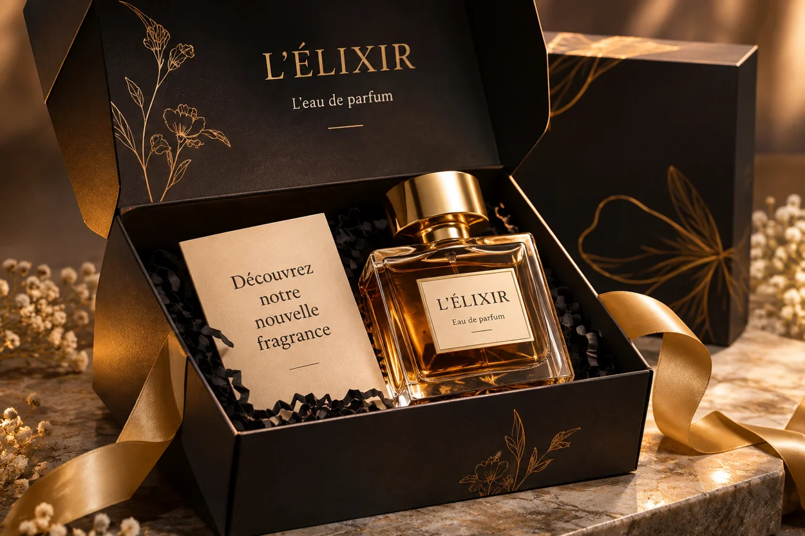

Concept illustratif · IA
Beauté & cosmétique
Présenter une nouvelle gamme et révéler chaque soin dans un univers cohérent.
Faites découvrir vos produits autrement. Kontfeel conçoit des seeding boxes, PR boxes et coffrets de presse personnalisés pour vos lancements de produits, campagnes d’influence et relations presse.
De la structure à l’impression, chaque détail est pensé pour valoriser votre marque dès l’ouverture.

Réalisation Kontfeel — Céréal Bio
Imaginez un coffret qui met en scène vos produits, transmet votre message et crée une expérience de découverte mémorable.

Présenter une nouvelle gamme et révéler chaque soin dans un univers cohérent.

Scénariser l’ouverture et organiser les accessoires autour du produit phare.

Mettre en valeur un lancement sélectif avec une présentation raffinée.
Nous adaptons le coffret à vos produits, à votre identité de marque et à vos contraintes de campagne. Les formats, matériaux, finitions et modalités logistiques sont étudiés selon votre cahier des charges.
Notre expertise en marketing point de vente permet aussi de prolonger votre lancement avec des supports PLV assortis.
Parlons de votre projet →Boîte à oreilles, coffret à rabat, dimensions et ouverture adaptées.
Intérieur et extérieur imprimés, finitions selon votre projet.
Compartiments, inserts, cartes et personnalisation du destinataire.
Conception, prototype selon projet et expédition adaptée au brief.
Réalisation Kontfeel — Céréal Bio
Pour cette campagne d’influence, le coffret intègre directement la recette et le message de marque dans son couvercle. L’ouverture devient ainsi un support de communication à part entière.
320 × 320 × 130 mm · Impression intérieure et extérieure · Carton mono-matériau · Montage sans colle ajoutée.
Découvrir la réalisation →Un coffret personnalisé destiné aux créateurs de contenu, journalistes ou partenaires pour leur faire découvrir les produits d’une marque lors d’une campagne de communication.
Le coffret de presse s’adresse notamment aux médias. La seeding box est généralement pensée pour les campagnes d’influence et l’expérience d’ouverture. Les usages peuvent se recouper.
Oui, la structure, les dimensions, l’impression, le calage et les supports de communication sont étudiés selon votre brief.
Indiquez vos produits, les quantités souhaitées, votre budget et votre échéance. Nous étudions la solution la plus adaptée à votre campagne.
Imaginons ensemble le coffret adapté à votre campagne.